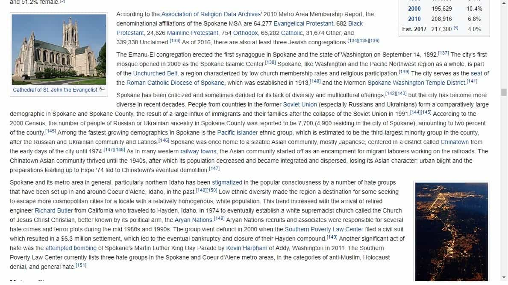

John Carver is a four year ROK veteran with over fifty articles of SJW-triggering truth bombs on archive. You can follow him on Twitter if you are so inclined.


As the United States is soon to reach a key milestone of being less than 60% non-Hispanic White due to rampant non-white immigration, tanking fertility levels, and increasing amounts of interracial offspring from black male-white female and white male-Asian female pairings, anti-white media propaganda has been revving up big time.
Whether it’s (((MTV News))) browbeating white men on how they can “do better”, the (((New York Times))) allowing a female Korean immigrant (Sarah Jeong) to keep her job despite having a laundry list of tweets that would get any white person fired in a flash, or Jon Hamm race-cucking himself on the African-American centric (but tribe financed) “Random Acts Of Flyness” TV show, the media assault is relentless.
Increasingly, cities and even entire states which remain well above this 60% white population threshold are being targeted for curing the inherent evil of “whiteness”. The state of New Hampshire for instance (94% white) was recently chided in the (((New York Times))), saying the state cannot “move forward” unless it has more non-white employees.
Apparently, the states somewhat infamous and uber-patriotic motto “Live Free Or Die” must become “Accept (Die)versity Or Die Anyway”.
Furthermore, any U.S. city with a population of over 100,000 which remains stubbornly white as we close in on the 2020’s is also a prime target for derision. Spokane, Washington (population 220,000 and 85% white) is one of those places in the elitist crosshairs.
Spokane, Washington. 85% White. Unlike Haiti, it must be a shithole. Needs more diversity.
Wikipedia, the ubiquitous online encyclopedia, is supposed to be as fair and impartial as possible when presenting properly referenced information. However, don’t count on (theoretical) encyclopedic neutrality to stymie the leftist agenda whenever the need arises.
For instance, here is a snapshot of the ‘Demographics‘ subheading for the city of Spokane, which chastises the comparatively large town in Washington State for being too white, an unspeakable crime for late 2010’s USA (full text is below the image).

Here is a reprint of the smoking gun text, and with key words highlighted in bold.
Spokane has been criticized and sometimes derided for its lack of diversity and multicultural offerings, but the city has become more diverse in recent decades. People from countries in the former Soviet Union (especially Russians and Ukrainians) form a comparatively large demographic in Spokane and Spokane County, the result of a large influx of immigrants and their families after the collapse of the Soviet Union in 1991. According to the 2000 Census, the number of people of Russian or Ukrainian ancestry in Spokane County was reported to be 7,700 (4,900 residing in the city of Spokane), amounting to two percent of the county. Among the fastest-growing demographics in Spokane is the Pacific Islander ethnic group, which is estimated to be the third-largest minority group in the county, after the Russian and Ukrainian community and Latinos. Spokane was once home to a sizable Asian community, mostly Japanese, centered in a district called Chinatown from the early days of the city until 1974. As in many western railway towns, the Asian community started off as an encampment for migrant laborers working on the railroads. The Chinatown Asian community thrived until the 1940s, after which its population decreased and became integrated and dispersed, losing its Asian character; urban blight and the preparations leading up to Expo ’74 led to Chinatown’s eventual demolition.
Spokane and its metro area in general, particularly northern Idaho has been stigmatized in the popular consciousness by a number of hate groups that have been set up in and around Coeur d’Alene, Idaho, in the past. Low ethnic diversity made the region a destination for some seeking to escape more cosmopolitan cities for a locale with a relatively homogenous, white population. This trend increased with the arrival of retired engineer Richard Butler from California who traveled to Hayden, Idaho, in 1974 to eventually establish a white supremacist church called the Church of Jesus Christ Christian, better known by its political arm, the Aryan Nations. Aryan Nations recruits and associates were responsible for several hate crimes and terror plots during the mid 1980s and 1990s. The group went defunct in 2000 when the Southern Poverty Law Center filed a civil suit which resulted in a $6.3 million settlement, which led to the eventual bankruptcy and closure of their Hayden compound. Another significant act of hate was the attempted bombing of Spokane’s Martin Luther King Day Parade by Kevin Harpham of Addy, Washington in 2011. The Southern Poverty Law Center currently lists three hate groups in the Spokane and Coeur d’Alene metro areas, in the categories of anti-Muslim, Holocaust denial, and general hate.
As you can clearly see, the Wikipedia page for Spokane was infiltrated by lackeys of the (((Southern Poverty Law Center))). Butthurt beyond all comprehension that there are too many “fellow white people” in this beautiful urban spot of the country.
Without any shadow of a doubt, a place with such a high percentage of whites must be a hotbed of “white supremacy”, “holocaust denial”, and searing “hatred” stemming from it’s unbearable whiteness right? Well the SPLC always seems to think so, and slow (die)versity is the only logical solution for such cities.
“Whitopia is in my sights. Master SPLC, where shall I airdrop the Somali and Syrian refugees on this white supremacist hovel?”
The whitest remaining small cities in the continental United States, such as Boise (Idaho), Spokane (Washington), Bend (Oregon), Salem (Oregon), and Eugene (Oregon) have quietly become somewhat popular relocation destinations for young white families of all political affiliations, who are seeking an American way of life more akin to the 1950’s rather than the United Nations style melting pot (or rancid stew?) brought about by the 1965 Immigration Act.
They are NOT so-called “white supremacists” or “hateful” people as they are so often mischaracterized, but peaceful and rational individuals who simply want to raise their children (or intend to raise children) in a cleaner, safer, environmentally beautiful, and more socially cohesive environment than what’s available in pretty much all of the major cities.
As mentioned before in “5 Ways Northeast Asian Countries Benefit From Having No Diversity“, it is entirely natural and normal to have a preference for ‘homophily’. That is the tendency of people to prefer the company of others who are most like themselves when entirely left to their own devices. And with many ways to now earn a viable income online, it is now no longer a requirement to live in a large (and mega diverse) city for career purposes.
The question is, will increasingly rare places like Spokane even be allowed to exist in the coming decades? Will every single comparatively white city in the United States need to be force-fed diversity through executive order?
Read Next: SPLC Targets ROK For Leftist Violence By Smearing It As A “Male Supremacist” Hate Group